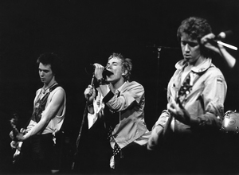
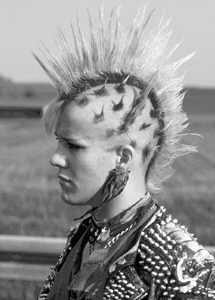

Pokret u rock-glazbi koji se pojavio u Sjedinjenim Američkim Državama i Velikoj Britaniji sredinom 1970-ih prerastao je glazbeni te postao umjetnički i ideološki fenomen. Punk karakterizira nihilizam, naglašeni autorski individualizam, izrazito negativno stajalište prema »fetišizmu umjetnosti« te brisanje granica između izvođača i publike. U Hrvatskoj enciklopediji možete pročitati što karakterizira punk-glazbu i istoimenu društvenu supkulturu, kako se punk razvijao te kako je utjecao na umjetnost, kulturu i društvo.
Punku je prethodio takozvani garažni rock 1960-ih (The Seeds, The Sonics, The Monks, 13th Floor Elevators, Question Mark and The Mysterians) te sastavi The Velvet Underground, New York Dolls, MC5 i The Stooges. Na sazrijevanje punka kao zasebne umjetničke forme presudno su utjecali Patti Smith Group, Ramones, Television, The Heartbreakers, Richard Hell & The Voidoids i rani Talking Heads.
Američki punk utječe na britanske sastave koji preuzimaju temeljne postulate, ali naglašavaju nihilističku dimenziju i izričaj prilagođavaju lokalnomu kontekstu. Britanski su sastavi punk učinili globalnim fenomenom. Prvi i najznačajniji predstavnik britanskoga punka bila je skupina Sex Pistols, a prvi val otočnoga punka čine The Clash, The Stranglers, The Damned, Buzzcocks i The Jam.

Sex Pistols
Potkraj 1970-ih pokret se modificira i potpada pod utjecaj drugih glazbenih strujanja. Zamijenio ga je novi val (new wave), koji je zadržao osnove estetike punka, ali je bio lišen zvučne sirovosti i otvorenoga političkog angažmana. Na sceni se pojavljuje i engleski post-punk (Siouxsie and the Banshees, Public Image Ltd, Joy Division i Gang of Four) te hardcore punk, supkulturni pokret nastao u Kaliforniji (Black Flag i Dead Kennedys) koji radikalizira izvorna načela punka.
Punk-glazbu karakterizira energična, agresivna, bučna, kratka (dvije do tri minute) i naglašeno pojednostavnjena izvedba brzog tempa, najčešće uz primjenu dva do tri temeljna akorda. Tekstovi pjesama tematiziraju urbanu svakodnevicu, reflektirajući cinizam i skepsu prema prevladavajućim društvenim i moralnim vrijednostima, osobito političkom establišmentu.

Punk je uvelike utjecao na društvena zbivanja. Potaknuo je razvoj neovisnih izdavačkih kuća, utjecao na jačanje alternativne umjetničke scene i pojavu raznih supkultura kao što je grunge, kojega je najpoznatiji predstavnik Nirvana. Ikonografija punka nadahnula je i modne dizajnere kao što je Viviene Westwood, filmske autore poput Dereka Jarmana i razvoj cyberpunka, znanstvenofantastičnoga žanra u književnosti i filmskoj umjetnosti. Više o glazbi i kulturnoj povijesti možete pročitati u Hrvatskoj enciklopediji.